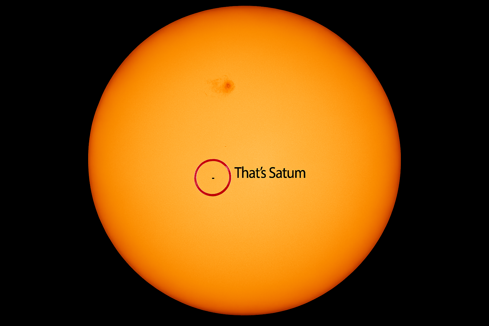

Saturn
Best known for its amazing rings, Saturn is the sixth planet from the Sun and the second largest in our solar system. Like Jupiter, Saturn is a gas giant made mostly of hydrogen and helium. Saturn is so light for its size that it would float if you could find a bath big enough! Its biggest moon, Titan, is even larger than the planet Mercury.
| Saturn Facts | |
|---|---|
| Diameter | 120,536 km |
| Mass | 5.68 × 1026 kg (95 Earths) |
| Moons | 293 |
| Rings | 7 main rings |
| Orbit Distance | 1,426,666,422 km (9.54 AU) |
| Orbit Period | 10,756 days (about 29.5 years) |
| Temperature (cloud tops) | -139°C |
This is what Saturn looks like compared to the Sun
